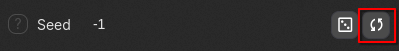
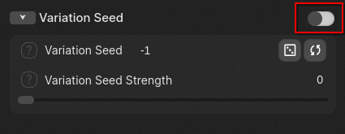
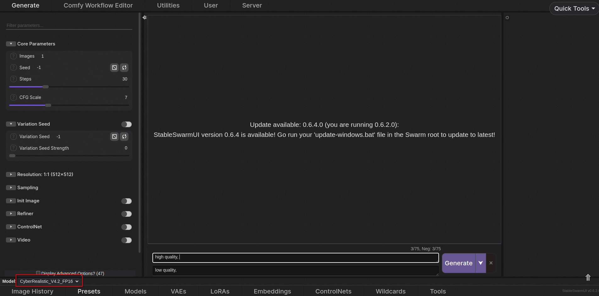
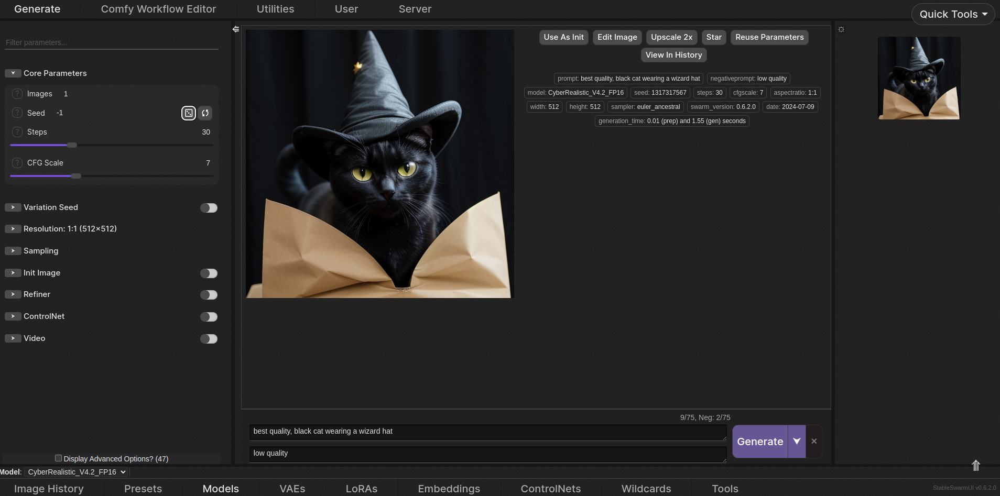

Table of Contents
In this comprehensive guide, we will walk you through the fundamental principles and features of using
SwarmUI, a versatile image generation interface. Additionally, we will delve into the core concepts of
Stable Diffusion technology, which powers image creation.
To begin, navigate to the tinyllama.local landing page and access the SwarmUI service by clicking on the
"SwarmUI" tab.
Understanding General Layout and Features
Upon loading SwarmUI, you will be presented with a user-friendly interface featuring various tabs and
settings. This guide aims to cover the essential aspects:
- The top section contains different tabs, with the "Generate" tab being our primary focus.
- The left-hand region displays Stable Diffusion parameters, which can be expanded for further
customization.
- The central region showcases the generated image output and prompt, accompanied by a "Generate" button.
- The right-hand region allows for batch image generation with a single click.
- The bottom section provides additional settings, including model selection and Image History, which can
be used to refine your image creation process.
Understanding Basic Parameters
In this section, we will explore the fundamental parameters available in SwarmUI's left-hand pane.
Core Parameters and Settings
Locate the "Core Parameters" section and expand it for access to essential settings:
- Images: Specify the number of images to generate simultaneously.
- Seed: Utilize a random seed or manually specify one to achieve consistent image results. The Reuse
button can be used to preserve the same seed for future generations.

- Steps: Determine the number of times the Stable Diffusion model is executed for a given set of noise.
Increasing steps can lead to improved image quality, but diminishing returns may occur at higher values.
- CFG Scale: Adjust the CFG scale to control how closely the model adheres to your prompt. A lower value
encourages creativity, while a higher value enforces strict adherence.
Variation Seed: Introducing Randomness to Images
Use the variation seed to introduce randomness to your image generation process. Enable the slider and
specify a value for the Variation Seed Strength, within the recommended range of 0.1-0.5.

Image Resolution Options
Configure SwarmUI to generate images at specific resolutions by entering an exact pixel-by-pixel value or
selecting a ratio. Some models may perform better with particular resolutions, but flexibility is generally
maintained.
Sampling Methods for Image Generation
Samplers are a fundamental component of Stable Diffusion technology. Selecting the optimal sampler can
significantly impact image quality and creativity. Consider the following options:
- Sampler: The default Euler Ancestral sampler is suitable for most use cases.
- Scheduler: Schedulers modify the behavior of the chosen sampler, and their usage is generally
application-specific.
Additional Parameters and Settings
The remaining basic parameters (Init Image, Refiner, ControlNet, and Video) are not addressed in this guide,
but will be covered in more detail in separate guides.
Selecting the Optimal Stable Diffusion Model
SwarmUI offers two pre-trained models tailored for various image creation tasks:
- CyberRealistic: A Stable Diffusion 1.5 model ideal for generating realistic images.
- DreamShaperXL: A Stable Diffusion XL model providing a wide range of art styles and creative
possibilities.
These models are based on different Stable Diffusion versions, with CyberRealistic (SD 1.5) being a faster
option but with lower overall quality, and DreamShaperXL (SDXL) offering higher image quality at the cost of
increased processing time. Fortunately, SwarmUI automatically adjusts settings for each model.
Switching Between Models
To change your Stable Diffusion model, simply expand the model selection in the lower left-hand corner of the
interface (pictured below).

Generating Your First Image with SwarmUI
Now that you're familiar with the general layout and basic parameters, let's create your first image using
SwarmUI. The default settings provided work fine for this example.
- In the center region, enter your Positive and Negative prompts in the text boxes. Place relevant details
in the Positive prompt and unwanted elements in the Negative prompt. These will be prepended with "best
quality" and "low quality," respectively, to guide the model towards optimal image creation.
- For this example, let's generate an image of a cat wearing a wizard hat. Type "cat wearing a wizard hat"
after "best quality." Separate concepts in your prompt with commas.
- Click the Generate button to initiate image generation.

Conclusion: Mastering SwarmUI for Efficient Image Generation
Stable Diffusion technology and SwarmUI provide a powerful combination for image generation. This guide has
covered the essential aspects, but there's more to explore. Feel free to ask questions by clicking the '?'
button next to each setting for a brief description.